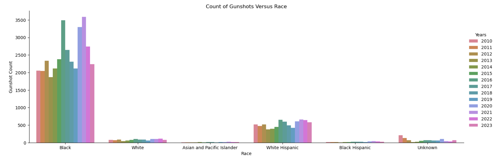
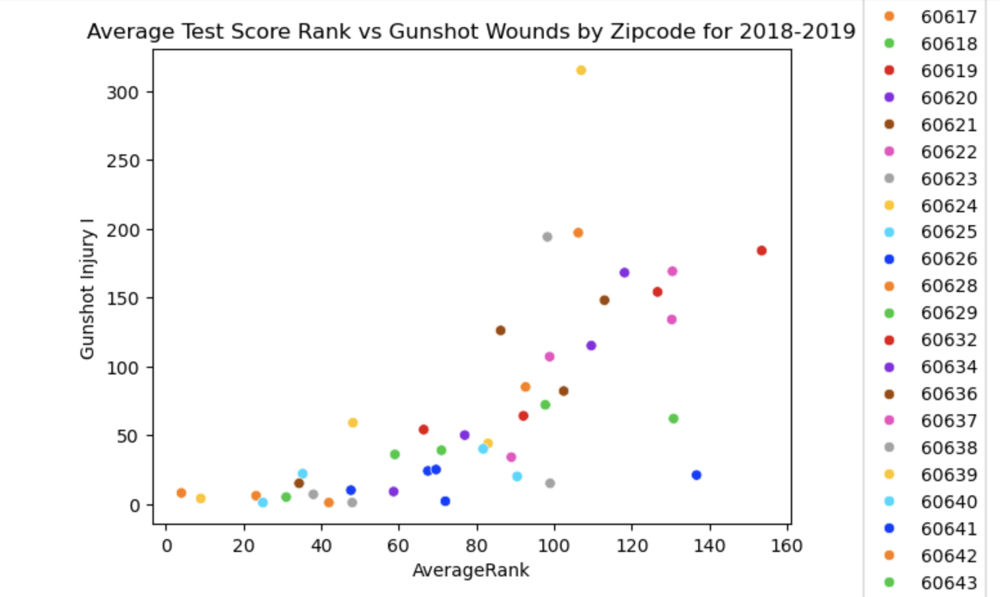

Crime in Chicago
Project Overview
Gun violence remains a critical issue in the United States, with 118 daily deaths in 2023 and Americans facing a gun-related death rate 25 times higher than other high-income countries. This project focused on Chicago, a city with notably high levels of gun violence, recording 2,684 shooting victimizations in 2023 alone. The research investigated trends in Chicago gun-related crime incidents from 2010 to 2023, analyzing how factors such as racial composition, educational attainment, age, sex, and geographic location are correlated with its prevalence. Data from the Chicago Data Portal on gunshot injuries, crime categories, and locations was combined with over eight Chicago Public Schools datasets to explore the relationship between educational outcomes and violent crime. By examining these variables together, we aimed to provide a comprehensive understanding of gun violence determinants in Chicago and offer insights on targeting resources to high-risk neighborhoods. All data used are publicly available through the City of Chicago’s Data Portal, established in 2012 to enhance access to government data.
The data cleaning process was complex and involved multiple steps. Initially, all raw datasets were imported. The main gun violence dataset was standardized by normalizing category labels, separating datetime fields, and removing irrelevant columns. Eight school datasets spanning different years were then preprocessed, requiring extensive standardization due to inconsistent column names and varied performance metrics. To create comparable measures across datasets, manual rankings were developed by averaging test scores and other key metrics such as family involvement and educational attainment. These rankings were standardized by zipcode. This approach allowed us to create a unified performance metric for further analysis.
Exploratory Data Analysis
The following visualizations display some of the most important exploratory data analysis conducted. This analysis eventually led to the creation of the research question and hypotheses. EDA was first conducted on how different demographics may be affected by major crime in Chicago. The primary motivation was to understand if key demographic metrics indeed could be used to analyze violent crime. If a metric showed a specific concentration/trend in violent crime, there would be a higher inclination to use it in research and perform regressions in the future. The following visualization shows that African Americans appear disproportionately affected by gun violence in Chicago:
The following visualization explores the relationship between educational attainment and crime across districts in Chicago:
Research Subquestions
The following questions motivated the regression models we constructed:
Subquestion 1: How do the months of the year differ in terms of the probability of gun violence which occurs in that month?
Subquestion 2: How does a zipcode's test-based academic ranking affect the frequency of gun violence in that zipcode?
Subquestion 3: How does the interplay between race, age group, educational attainment (measured through average test scores), and zipcode affect one's likelihood of experiencing gun violence?
Key Insights
Regarding subquestion 1, we chose to run a multivariate linear regression with the inputs being binary variables for each month. There were 11 binary variables total and the reference variable was January. Since each indicator variable was binary, that just means the coefficient tells us how the probability of a gunshot-related incident changes when the month changes from January to another month. Our analysis revealed that the month with the highest probability of a gunshot-related incident was July, which is likely influenced by educational factors that may play a role in reducing crime rates.

Regarding subquestion 2, we hypothesized that there was a positive linear relationship between the frequency of gunshot violence and higher educational rank (indicating worse test scores). Using a linear regression model, we analyzed the effect of “AverageRank” on gunshot violence frequency, writing a function to run the process for each year. We first used scikit-learn to split each year’s data into a training set (80%) and a test set (20%), calculated the coefficient and intercept, and confirmed through residual plots that the data was randomly distributed and not heteroskedastic. We then used statsmodels OLS regression to assess statistical significance. For every year, the p-value of the coefficient was under 0.05 and close to 0, supporting rejection of the null hypothesis. Model performance was evaluated with RMSE and MAE for the test set and through six-fold cross-validation, with low values indicating good generalization. Results showed that a one-unit increase in AverageRank corresponded to an increase in gunshot occurrences equal to the coefficient. For example, in 2011–2012, a coefficient of 1.767 and an intercept of −9.875 indicated that a one-unit rise in AverageRank was predicted to increase gunshot occurrences by 1.767. Overall, the findings suggested that lower ranked schools were associated with higher occurrences of gunshot-related incidents.
Regarding subquestion 3, the model produced several results, but only one predictor variable was statistically significant. The race category “Black” had a coefficient different from zero with a p-value under 0.05, while most other predictors, despite having nonzero coefficients, had p-values above 0.05 and were not statistically significant. This meant the null hypothesis could not be rejected, as significance was found in only one category rather than across race, age group, zipcode, and average rank. All else equal, being African American in the same zipcode and age group as the reference variable (a white male age 80+ in zipcode 60605) was associated with 3.3951 more occurrences of gunshot injuries. While the model’s predictions would be unrealistic for values below zero, the coefficients allowed for meaningful relative comparisons. Including “AverageRank” remained important in calculating gun violence risk, as it was a continuous variable rather than a dummy variable.
The analysis showed that gun violence in Chicago was a multi-faceted problem and highlighted novel approaches for exploring and explaining it. Race emerged as the most significant predictor of one’s chances of experiencing gun violence, a finding that could encourage local leaders to address these disparities. The data also revealed a seasonal pattern, with violence peaking in July. These trends suggest that targeted interventions during specific months could help reduce gun crime in the city.
Tools & Methods
- Python (pandas, numpy, statsmodels, matplotlib, scikit-lear, duckdb)
- SQL
- Exploratory data analysis
- Data cleaning, merging, & filtering
- Advanced regression analysis
- Research
Collaborators
- Abhay Gupta
- Emily Fu
Additional notes: It was a pleasure to work with both of my teammates on this project. Their expertise and contributions were invaluable.
← Home